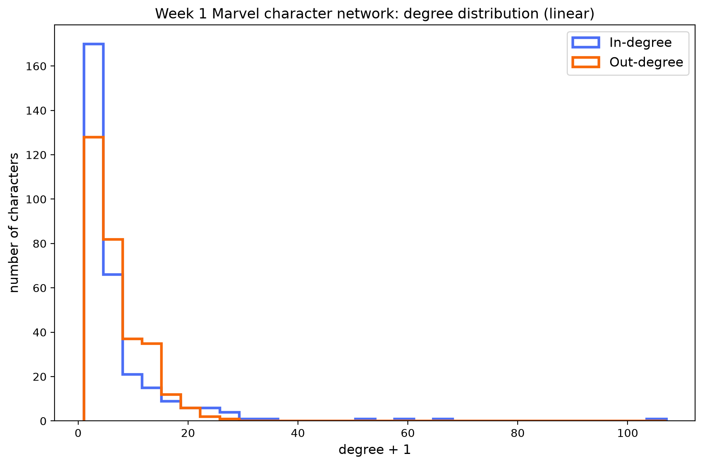
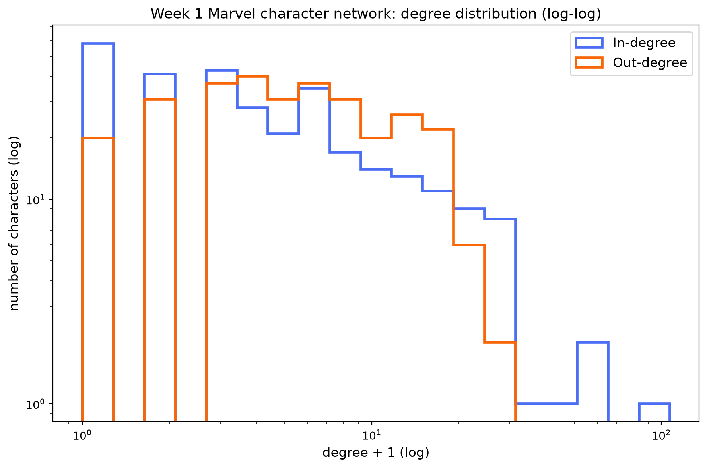
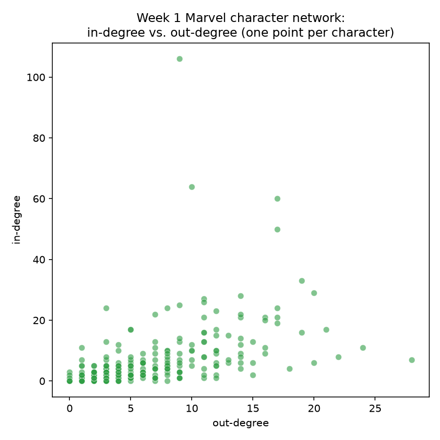
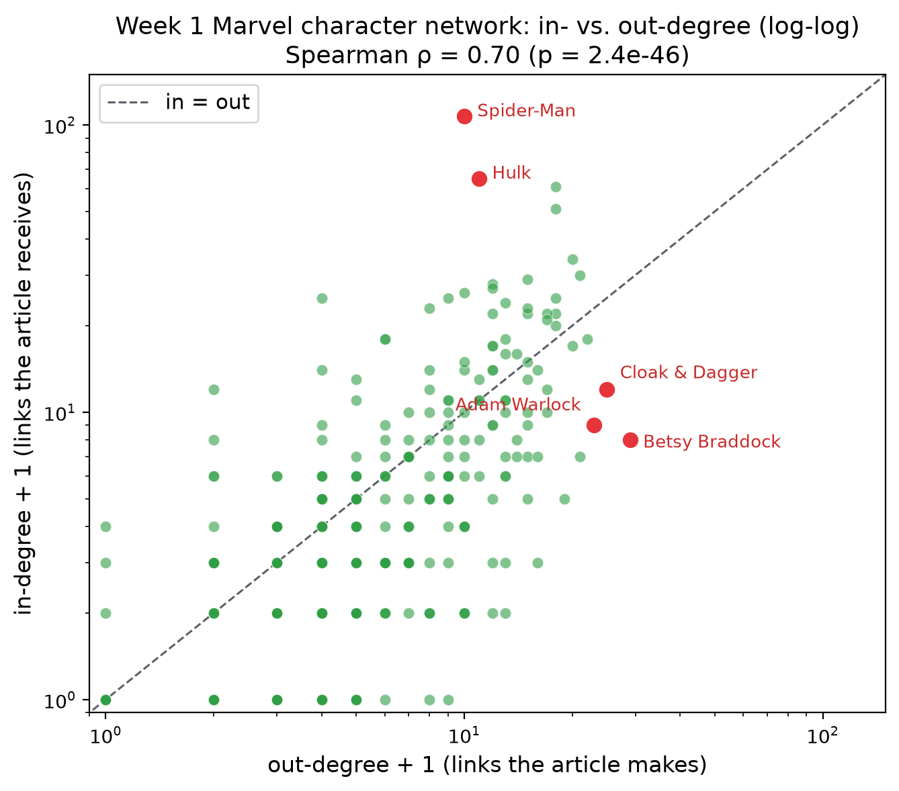
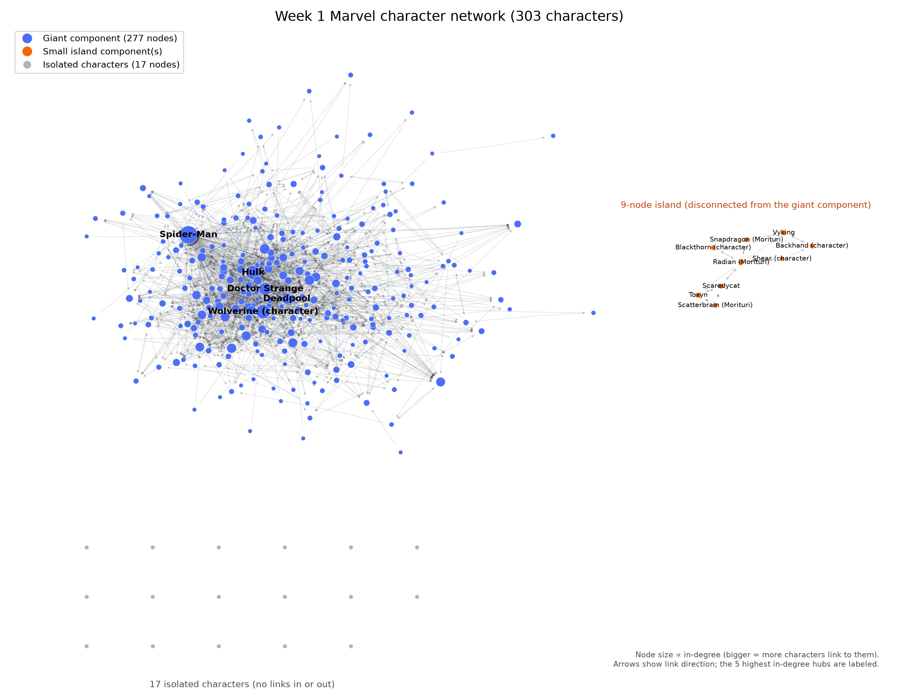
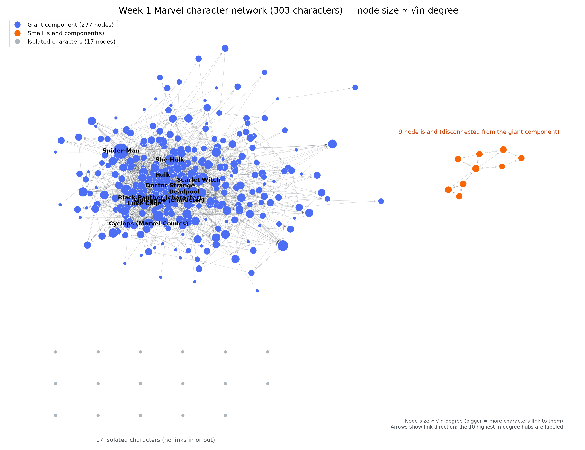
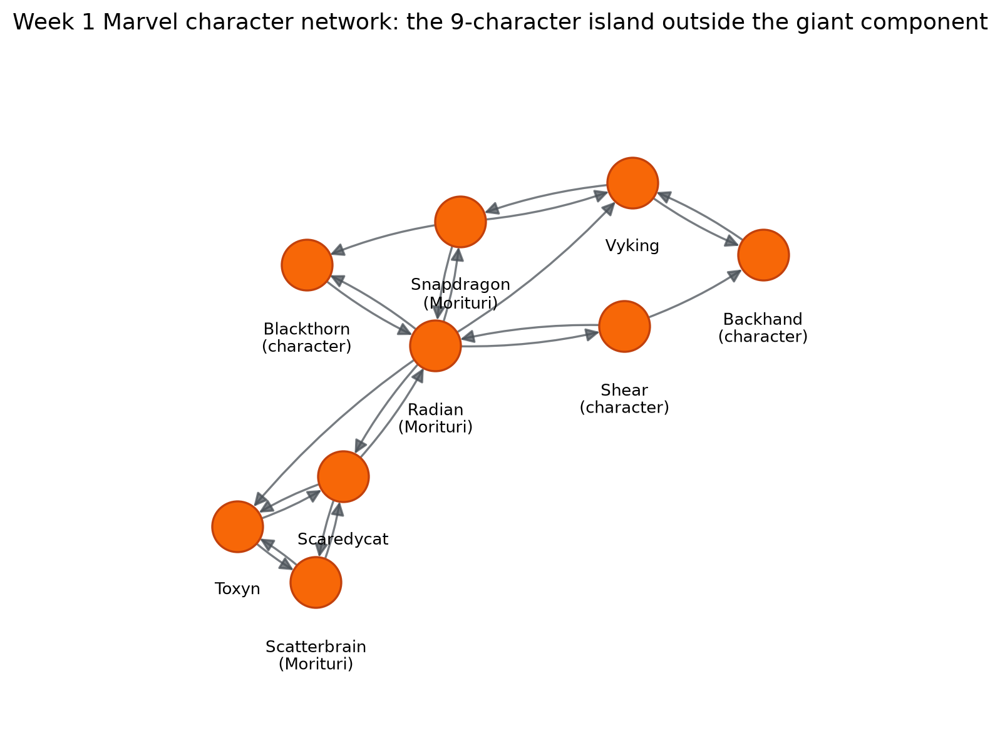

Degree distributions, in- vs. out-degree, and going looking for the giant component's islands in 303 Marvel characters.
What we asked
How connected is the Marvel character network built from Wikipedia links? Is the network
dominated by a handful of hubs, or is degree spread fairly evenly across characters — and does
everyone actually belong to one connected story, or is anyone left out entirely?
What we did
We loaded the course's frozen Week 1 snapshot — 303 Marvel characters and the directed links
between their Wikipedia articles — using NetworkX, making sure to add every character as a
node before adding any edges. Skipping that step silently drops any character with no
link to or from another character in the dataset, understating the network's true size.
From the resulting directed graph we computed in-degree and out-degree per character, plotted
both distributions on linear and log-log axes, checked how in- and out-degree relate to each
other, found the weakly connected components, and drew the full network so the giant component
and any smaller islands are visible at a glance. All of the numbers and figures below come
straight out of that pipeline — nothing here is hand-typed separately from the code that
produced it.
Characters (nodes)303
Directed links (edges)1,784
Isolated characters17
Giant component size277
Weakly connected components19
Outside the giant component26
Max in-degree106
Max out-degree28
Degree distributions
Both distributions are heavily right-skewed: most characters link to (or are linked from) only
a handful of others, while a small number of hub characters rack up dozens of connections.
Plotting in-degree and out-degree together, on the same axes, makes that skew easy to compare
directly rather than eyeballing two separate charts. The log-log view lines that skew up
against a straight-line (power-law-like) decay — both fall off fast at first and then trail
into a long, thin tail of hubs. We plot degree + 1 (rather than 0) so the isolated
characters remain visible on the log axis instead of vanishing at zero.

In-degree and out-degree distributions — linear axes.

In-degree and out-degree distributions — log-log axes.
Top 5 by in-degree:
1Spider-Man106 in-links
2Hulk64 in-links
3Wolverine (character)60 in-links
4Doctor Strange50 in-links
5Deadpool33 in-links
Top 5 by out-degree:
1Betsy Braddock28 out-links
2Cloak and Dagger (characters)24 out-links
3Adam Warlock22 out-links
4Venom (character)21 out-links
5She-Hulk20 out-links, tied with U.S. Agent
Not a single character appears in both top-5 lists.
In-degree vs. out-degree
In-degree and out-degree aren't the same thing here: in-degree counts how many other
characters' articles link to a character (roughly, how often they're referenced),
while out-degree counts how many characters that character's own article links out to.
Plotting one against the other for every character shows only a moderate positive relationship
— being linked to often doesn't necessarily mean linking out to many others in return, which
is exactly what happens with the biggest hubs.

In-degree vs. out-degree, one point per character. Pearson r ≈ 0.4965 — a moderate but far from tight relationship.
Redrawing the same comparison on log-log axes sharpens the picture. The dashed diagonal marks
in-degree = out-degree: characters above it are referenced by more articles than they
link out from (the celebrities), while characters below it point at more articles than point
back at them (the generous linkers). In rank terms the two are strongly related — Spearman
ρ ≈ 0.70
(p ≈ 2.4 × 10−46) — but the labelled
outliers show they are not interchangeable: Spider-Man and Hulk sit far above the diagonal,
while Betsy Braddock, Cloak and Dagger, and Adam Warlock sit far below it.

In-degree vs. out-degree on log-log axes (degree + 1). Spearman ρ ≈ 0.70.
Visualizing the network
The static drawing below lays out the giant component with a force-directed layout, and pulls
the smaller island and the 17 isolated characters into their own clearly-labeled regions so
they don't get lost inside — or randomly scattered on top of — the main component.

The full network. Blue nodes belong to the 277-character giant component; amber nodes are a separate 9-character island; gray nodes are the 17 isolated characters. Node size scales with in-degree.
Rescaling the network
In the full-network drawing above, node size scales linearly with in-degree, which lets
Spider-Man (106 in-links) dominate the canvas. Rescaling size to the square root of in-degree
keeps the hubs biggest while compressing the range — the biggest hub draws at
about 10× the radius of an in-degree-1 node rather than 106× — so the mid-tier
structure becomes readable: the dense cores around the spider- and X-lineage characters, the
amber island off to the side, and the 17 gray isolates, without one hub swallowing everything.
The ten most-referenced characters are labelled directly.

The same 303-node network, node size ∝ √in-degree. Labels mark the top 10 by in-degree: Spider-Man (106), Hulk (64), Wolverine (60), Doctor Strange (50), Deadpool (33), She-Hulk (29), Scarlet Witch (28), Black Panther (27), Cyclops (26), and Luke Cage (25).
Every node below is one of the 303 Marvel characters; a directed edge means one character's
Wikipedia article links to another's. It's the same network, live and interactive: find a hero
below, or just drag, zoom, and click your own way through it.
Find a hero
Network
Arrows
Drag a node to move it, scroll or pinch to zoom, drag empty space to pan, and hover a character
for a quick tooltip. Click a node — or find one above — to see its full profile below the graph.
No hero selected yet — click a node or find one above.
Size — bigger dots have higher in-degree
Brightness — brighter dots have higher out-degree
Computed live from the raw Week 1 data files in your browser — no server-side rendering, no
Wikipedia API. Selecting a hero highlights its direct connections and dims the rest.
🔎 Worth clicking on: Spider-Man's outsized in-degree, the tightly-knit Morituri island sitting
just off the giant component, and the quiet handful of isolated characters with no links at all.
Toggle the network controls above, find a name, or just start dragging — see what you find.
The giant component and its islands
17 characters are fully isolated — no links in or out at all. Separately, nine more characters
— Backhand (character), Blackthorn (character), Radian (Morituri), Scaredycat, Scatterbrain
(Morituri), Shear (character), Snapdragon (Morituri), Toxyn, and Vyking — form their own small
component: linked to each other, but not connected to the giant component that holds the other
277 characters together. Altogether, 26 of the 303 characters (about 8.6%) sit outside the
giant component entirely.
A network can look fully connected in a headline number — "303 characters, 1,784 links" — and
still hide a disconnected 8.6% once you actually go looking for weakly connected components.
The amber region in the network drawings is worth a closer look: those nine characters are the
cast of Strikeforce: Morituri (1986–89), a short-lived series whose premise — heroes
gain powers and die within a year — apparently extended to their Wikipedia presence.

The 9-character island on its own, edges directed as everywhere else. Every link here stays inside the island — none reach to or from the giant component.
What surprised us
The in-degree distribution is heavily skewed: Spider-Man alone has nearly double the in-degree
of the next-closest character (Hulk, 64), consistent with the long-tailed shape in the log-log
plot above. And the network is less fully connected than it first looks — it isn't just the 17
isolated characters sitting outside the main story; the separate nine-character island means
26 characters in total (about 8.6% of the roster) never connect back to the giant component.
Skipping the "add nodes before edges" step would have hidden all 17 isolates and made the
network look artificially smaller and more connected than it really is.
The findings
Pulling the threads together — the distributions, the scatter, the components, and the
per-character rankings — here is what the Week 1 network actually says:
Fame is heavy-tailed. In-degree averages 5.89 with a median of just 3, but tops out at 106 (Spider-Man) — and the top 8 characters (2.6% of the nodes) absorb 22% of all incoming links; it takes the top 17 (5.6% of the nodes) to pass one third. On log-log axes the distribution decays along a near-straight line: rich-get-richer, all the way down.
Linking out is a different crowd. Out-degree caps at 28 (Betsy Braddock), and the out-degree leaderboard is full of teams and multi-alias lineages — Cloak and Dagger, Venom, Rachel Summers — whose articles point at every identity they have accumulated. Only She-Hulk and Deadpool appear in both top-10 lists.
But the two still correlate. In- and out-degree rank-correlate at Spearman ρ ≈ 0.70 (p ≈ 2.4 × 10−46): being famous and being curious travel together, even when the leaderboards barely overlap.
One giant, one island, seventeen castaways. 277 of 303 characters form the giant component; a nine-character island — the cast of Strikeforce: Morituri (1986–89) — links only among itself; and 17 characters (Baymax, Miracleman, and Super Rabbit among them) have no edges at all.
Nearly 40% of citations are mutual. 39.24% of the network's edges point both ways, and they cluster inside character families — the spider-lineage and X-lineage link back and forth heavily.
Marvel's Kevin Bacon is Spider-Man. Every other character in the giant component sits a mean of 1.68 links away, and Spider-Man's betweenness centrality (0.235, undirected within the giant component) is more than double the runner-up Hulk's (0.105) — most shortest paths pass through him.
Celebrities vs. tour guides. Some characters are linked to far more than they link out — Ms. Marvel (11 in, 1 out), Jeffrey Mace (7/1), Black Marvel (5/2), Fin Fang Foom (5/2). Others do the opposite: Spider-Bitch (Ashley Barton) (15 out, 2 in), Firebird (Marvel Comics) (12/2), and Solo (Marvel Comics) (12/1) point at lots of characters while almost nobody points back.
It is lonelier to be un-famous than un-curious. 58 characters are never cited by anyone, but only 20 (about 7%) cite nobody — the network is kinder to readers than to the read.
📎 Reproducing this: the figures above are generated by
analysis/build_week1.py from the frozen data in data/week1/ — see the
project's README.md for how to re-run it.